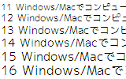
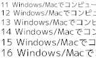
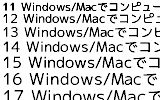
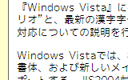
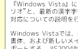
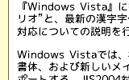
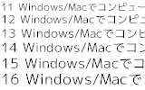
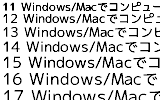
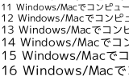
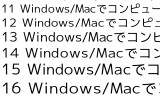

M+ と IPAフォントの合成フォント
OpenType版
説明
Windows XP/2000 で ここの TrueTypeフォントを使うと
文字の表示が薄くなるね、といわれます。
OpenType 形式のフォントならば文字が濃く表示されるようです。
そこで、OpenType 形式に変換してみました。
TrueType 版との違い
- 等幅フォントは含まれていません。
OpenType版 等幅フォントを作ってみたところ、 表示がくずれる (全角文字も半角幅で表示されて重なる) という不具合があって、正常使用できなかったためです。
注意点
- OpenType版のフォント名は TrueType版と同じなので、入れかえる前に同名のフォントを削除して、そのあとでインストールしてください。
- InternetExplorer6.0 の表示フォントに指定できませんでした。(しかし、IEで まずTrueTypeフォントを表示フォントに指定してから、TrueTypeフォント削除→OpenTypeインストールすると、表示できました)。
Firefox1.5 だと表示フォントに指定できました。
ダウンロード
このフォントはどなたでも無料でお使いになれます。
IPAフォントの再配布条件に従い、 オープンプリンティングシステム用 HP Vector Driverに同梱して配布しています。改変前のIPAフォントも含んでいます。
mixfont-mplus-ipa-OpenType-20060520.tar.bz2 (16.2 MB)
Windows で tar.bz2 形式のファイルを展開するには、Lhaz などを使ってください。
フォントそれぞれの説明は、フォント一覧 をどうぞ。ライセンスは TrueType 版と同じです。
スクリーンショット
Windows XP
|  |  | |
Windows XP で、TrueTypeを ClearType表示したものです。 |
Windows XP で、TrueTypeを標準アンチエイリアス表示。 |
|
|  | ||
Windows XP で、OpenType を表示したものです。 |
||
{kind=link}
{kind=link}
{kind=link}
|  |  | |
Windows XP + TrueType & ClearType。 |
Windows XP + TrueType & 標準アンチエイリアス。 |
|
|  | ||
Windows XP + OpenType。 |
||
{kind=link}
{kind=link}
{kind=link}
Windows 2000
|  |  | |
Windows 2000 で、TrueType を標準アンチエイリアス表示。 |
Windows 2000 + OpenType。 |
|
{kind=link}
{kind=link}
Linux
|  |  | |
Debian GNU/Linux testing(etch) で、TrueType を表示。 |
Debian GNU/Linux testing(etch) + OpenType。 |
|
{kind=link}
{kind=link}